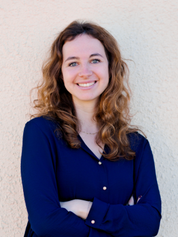

Nuestro CV
Jaume Cuadrada

DADES PERSONALS - Dni: 38850345X - Direcció: C/Miquel Biada 85 4art 1era, Mataró (BCN) - Telèfon: 606326395 / 937983259 - E-mail: jaumecuadrada.audio@gmail.com ESTUDIS - 2015 Tècnic en Administració de serveis d'internet. - 2012 Cursant Grau en Enginyeria tècnica de Telecomunicacions (Especialitat IMATGE i SÒ a Universitat Ramon Llull. - 2003-2005 TÈCNIC DE GRAU SUPERIOR (especialitat SÒ) : cursat al C.P Villar (BCN). EXPERIÈNCIA LABORAL - 2017-(Actualitat) Encarregat tècnic de sala a BARCELONA ACTIVA (Bcn): Responsable tècnic audiovisual en diversos auditoris de Barcelona Activa. Peparació i supervisió d’actes, xerrades, projeccions, masterclasses i conferències. - 2017-2018 Tècnic i microfonista a l'empresa FOCUS (Bcn): Tècnic i encarregat de microfonia inhalàmbrica de l'obra "La taverna dels bufons" al teatre Romea (Bcn) i "Dones" i “El fantasme de Canterville” al teatre Condal (Bcn). Actualment fent la gira d“El fantasma de Canterville” per tot Catalunya. - 2016 Tècnic i dissenyador de sò a l'empresa FOCUS (Bcn); Tècnic de funció a l'obra "Panorama desde el pont" al teatre Romea (Bcn) i "Avui no sopem" al teatre. Condal (Bcn). - 2013-2015 Tècnic de sò a l’empresa MICS (MATARÓ): Tècnic de sò en events audiovisuals. - 2006-(Actualitat) Grabació de produccions musicals : Grabació , post-producció i mescla de produccions musicals en estudi propi basat en ProTools. - 2007-2009 Tècnic de sò a l'empresa TRIPLE ONDA S.A (MATARÓ): Tècnic microfonista i de monitors. Reparació i manteniment d'equip audiovisual. - 2005-2007 Encarregat de familia de productes a RENUEVO S.A (BCN): Gestió de la familia de productes de só i imatge a la botiga de segona ma RENUEVO S.A. - 2005 Assistent tècnic en pràctiques a CROMA 404 sò i llums (El Masnou): Ajudant de magatzem i muntatge d'events audiovisuals. - 1999-2003 Tècnic de fotolits a REISEM S.A (Mataró) IDIOMES - Català i castellà: Escriptura, lectura i parla a nivell natiu (alt) - Anglès: Escriptura (Mig), lectura (alt), parla (Mig) INFORMACIÓ COMPLEMENTARIA - Pràctica en programes d'edició , mescla i postproducció d'audio i video : Final Cut , Logic, Protools , Cubase , Soundforge ... i el funcionament de la majoria de pluguins del mercat. - Domini de les principals taules de sò del mercat: Consoles digitals i analògiques (Yamaha, Midas, Soundcraft, Presonus...). - Estudi propi de gravació basat en Protools i Logic Pro X, microfonia Rode, AKG, Shure, Neumann...). - Nocions de sincronismes de senyal. - Carnet B-1. - Informàtica i ofimàtica a nivel d’usuari avançat.
Inge Heeringa
Full Stack Developer with years of experience in the tech industry.
Personal Data
- Name: Inge Heeringa
- Date of birth: 5/7/1994
- Phone number: +34612345678
- Email: inge.heeringa@gmail.com
Work Experience
Full Stack Developer
2023 -
- Responsible for frontend and backend development
- Maintaining code
- Mentoring Junior Web Developers
Frontend Developer
2021 - 2023
- Building pages with HTML, CSS and JS
- Maintaining code
- Debugging
Web Designer
2020 - 2021
- Structuring and styling webs with HTML and CSS
- Building pages with Wordpress
- Editing images and photos with Photoshop
Education
Full Stack Development Bootcamp
January - March 2023
- HTML, CSS, JS
- Frontend
- Backend
freeCodeCamp (online course)
June - September 2021
- Frontend development
- Semantic HTML
- SASS